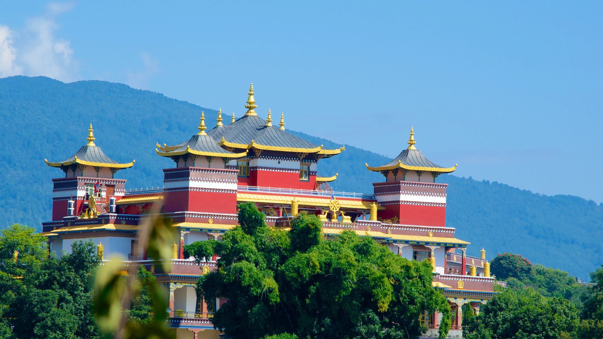
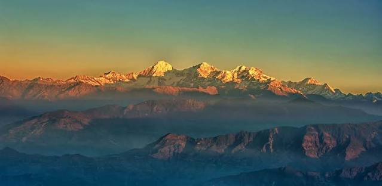
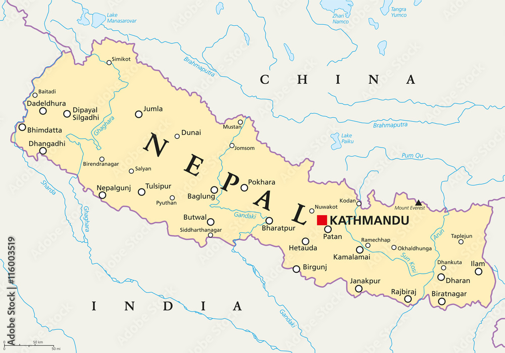

Around 4300 feet (or 1300 meters) above sea level is where Kathmandu sits, surrounded by many beautiful mountains, such as the Himalayas and the one and only Mount Everest. Because of this, Kathmandu has a large, supportive, climbing and hiking community that is very welcoming to beginners. They also are constantly sharing travel tips, such as bringing a repair kit for the worst case scenario when stuff breaks. Despite the popular mountain scene, those who would rather stay on flatter ground can stay entertained by the beautiful national parks, such as the Shivapuri Nagarjun National Park or The Kathmandu Forest Reserve, where you can find the butterfly trees and the beautiful Himalayan Aster flowers. The combination of the flora community combined with the exponential terrain makes it a must-visit.


